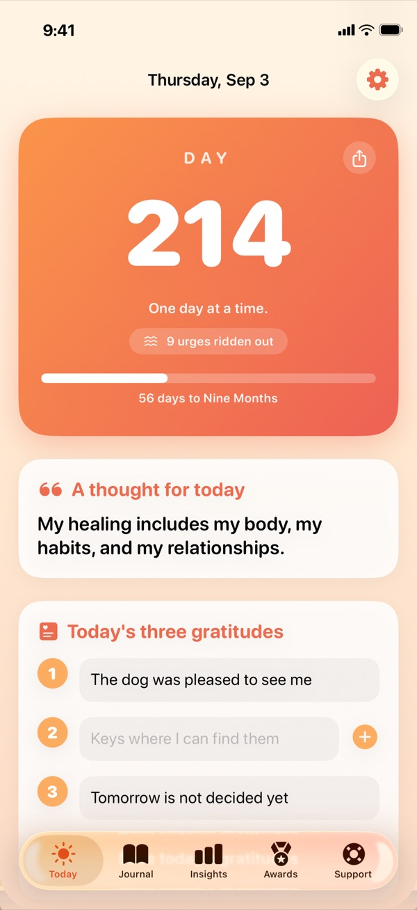

Ride out a hard moment
Urges build, peak, and come back down on their own. A timer counts up while you wait one out, so there's no minimum to hit. Every second already counted.
Now on the App Store
Somewhere to turn when an urge hits. A timer that counts up while the wave passes, the plan you wrote while you were calm, and the people you trust one tap away. It counts your sober days too, and it never asks you to explain yourself.

Available now
Free to download, on iPhone and iPad. One day at a time.
What it does
Urges build, peak, and come back down on their own. A timer counts up while you wait one out, so there's no minimum to hit. Every second already counted.
Each urge you ride out, you note how strong it was and what you reached for. Insights reads it back: how far your waves usually fall, how long yours tend to take, and which of hungry, angry, lonely or tired keeps turning up. Any of it goes into your plan with one tap, and it waits until there's enough to be honest about.
A hard moment is the worst time to think clearly. Write down what you'll do and who you'll call today, and Not Beaten hands it straight back to you at 2am.
A bold day counter marks how far you've come, with a gentle nudge toward the next milestone. In the first three days of a new run, it counts the hours and minutes, too. Badges start on day one and keep coming long past your first year, and a hard day never takes one away.
Just for today: a small promise to yourself each morning, and a minute each evening to look back. A slip never resets your count, and your check-ins sit in your Journal beside your entries. Reminders are off unless you turn them on, and they never say anything private on your Lock Screen.
Day Counter shows the day you're on and how far it is to your next milestone. Today's Words shows one kind line a day. Both work on your Home Screen and your Lock Screen, and a tap opens Today.
Some people are counting a month rather than counting from here on. Point the counter at a finish line, and take it away again whenever you like. Reaching it doesn't end anything: your day count carries straight on. A hard day never fails it either, the count just starts again.
Tell it roughly what a week used to cost, and Insights will show what the days add up to. Entirely optional, and if you'd rather not think about money it never appears at all.
Write three small things each day, plus whatever feelings you're carrying, and look back anytime. An optional evening reminder helps, and you can ease it back or turn it off whenever you like.
A steadying line waiting for you each day, drawn from a built-in pack written for recovery.
A hard day happens. Log it kindly, keep your history, and tomorrow becomes Day 1 again.
Online meetings, hotlines, and trusted reading are one tap away for the moments that matter most.
Lock Not Beaten with Face ID, Touch ID or your passcode, in Settings under Privacy. It's off unless you turn it on. While it's on, your widgets stop showing your day count, and the 988 lifeline stays one tap away on the locked screen.
Tone
Recovery isn't a straight line, and telling the truth about a hard day takes real strength.
This badge is yours forever, so be proud of it.
Tomorrow is Day 1. And you won't be doing it alone.
Not Beaten Plus
The urge timer, your plan, the day counter, milestone badges, the widgets, the app lock, gratitudes, journal, affirmations, insights, share cards and support all stay free forever. An optional one-time Not Beaten Plus adds more themes including night palettes, your own written affirmations, your journal as a keepsake PDF, and deeper insights. It is a one-time purchase, never a subscription.
See it on the App StorePrivacy
Not Beaten is built local-first: no accounts, ads, analytics, or tracking. Your day count, gratitudes, journal, and setbacks are stored on your device. It's a companion, never a substitute for treatment, a sponsor, or professional care.
Read the privacy policyWorth reading
How long does a craving actually last?
Shorter than it feels. What the shape of a craving means when you are standing in one.
Urge surfing: what it is and how to do it
Not fighting the wave and not being knocked over by it, and why a timer that counts up beats one that counts down.
HALT: hungry, angry, lonely, tired
Four ordinary states that make a hard moment harder, and the thing you can do about each one.